Rust
A language empowering everyone
to build reliable and efficient software.
Why Rust?
Performance
Rust is blazingly fast and memory-efficient: with no runtime or garbage collector, it can power performance-critical services, run on embedded devices, and easily integrate with other languages.
Reliability
Rust’s rich type system and ownership model guarantee memory-safety and thread-safety — enabling you to eliminate many classes of bugs at compile-time.
Productivity
Rust has great documentation, a friendly compiler with useful error messages, and top-notch tooling — an integrated package manager and build tool, smart multi-editor support with auto-completion and type inspections, an auto-formatter, and more.
Build it in Rust
In 2018, the Rust community decided to improve the programming experience for a few distinct domains (see the 2018 roadmap). For these, you can find many high-quality crates and some awesome guides on how to get started.

Command Line
Whip up a CLI tool quickly with Rust’s robust ecosystem. Rust helps you maintain your app with confidence and distribute it with ease.
Building ToolsWebAssembly
Use Rust to supercharge your JavaScript, one module at a time. Publish to npm, bundle with webpack, and you’re off to the races.
Writing Web AppsNetworking
Predictable performance. Tiny resource footprint. Rock-solid reliability. Rust is great for network services.
Working On ServersEmbedded
Targeting low-resource devices? Need low-level control without giving up high-level conveniences? Rust has you covered.
Starting With EmbeddedRust in production
Hundreds of companies around the world are using Rust in production today for fast, low-resource, cross-platform solutions. From startups to large corporations, from embedded devices to scalable web services, Rust is a great fit.
Get involved
Read Rust
We love documentation! Take a look at the books available online, as well as key blog posts and user guides.
Read the bookWatch Rust
The Rust community has a dedicated YouTube channel collecting a huge range of presentations and tutorials.
Watch the VideosContribute code
Rust is truly a community effort, and we welcome contribution from hobbyists and production users, from newcomers and seasoned professionals. Come help us make the Rust experience even better!
Read Contribution GuideThanks
Rust would not exist without the generous contributions of time, work, and resources from individuals and companies. We are very grateful for the support!
Individuals
Rust is a community project and is very thankful for the many community contributions it receives.
See individual contributorsCorporate sponsors
The Rust project receives support from companies through the Rust Foundation.
See Foundation members